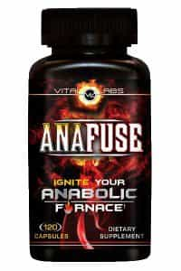
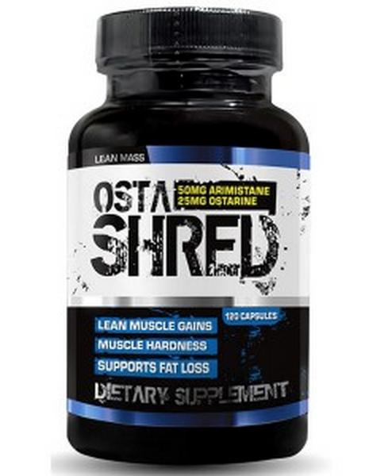

Sponsored Article is ROK's official account that publishes sponsored articles from advertisers. If you are interested hiring a sponsored article for your site, product, or service, visit our advertising page.


The following article was sponsored by John Doe Bodybuilding
As you may have picked up from reading a few of my past articles, I’m very skeptical about a lot of supplements. The ones I do write about are supplements that I feel work and supplements I have personally used and felt like I achieved results.

A lot of reviews you read from people you have to take with a grain of salt, because they are from people who have no reference to compare things to. I however, have that reference. I’m not here to bullshit anyone, I use steroids and I have a prescription for testosterone through my Doctor. My body does not make its own testosterone and I need it to live like a normal human being.
One was called “OSTA-SHRED” by Hard Rock supplements, and the other was called “Anafuse” by Vital Labs. To my knowledge these products need to be ordered online and cannot be purchased in stores yet.
Without getting too scientific on you, the “Osta-Shred” is a new type of muscle building supplement called a SARM (selective androgen receptor module). What a SARM does is it acts on different pathways than a testosterone derivative or a typical androgenic steroid, and it gives you all of the benefits without the side effects.
Unlike most prohormones out there (of which most are banned now) a SARM does not knock your normal testosterone production in the dirt. You have no issues with recovery at all when you discontinue use!
SARMS are most commonly sold as a research liquid and they are extremely expensive to buy, and having known little about them I had never used them, up until a supplement pill form was sent to me to try 8 weeks ago.
Of course I was extremely skeptical and having been a veteran gear user myself…
After being on the Osta-Shred and Anafuse for that first week, my preconceived notion that they wouldn’t do shit quickly changed.
Most prohormones make me feel like shit, these did not! I felt incredible on them and noticed an increase in sex drive and well being just in one short week!
The only other thing I was using was 150mg/week of testosterone per my doctor, nothing else. I will put that on my son’s life that I was using nothing else besides 150mg/week of test.
On the stack I noticed a slight increase in strength but nothing crazy until week #2. The biggest thing that was happening is I was getting dryer.
The Osta has a built in anti-aromatase/water cutter in it called Arimastane which works like a fucking champ. I was noticeably dryer in that first week.

I had to drop my 1/2 mg 3x/week dosage of arimadex while using Osta-shred because I had a bad reaction and broke out in hives one day, and that can commonly happen when estrogen levels get TOO LOW.
The 1/2mg 3x/week of prescription arimadex topped with the Arimastane that is included in “Osta-Shred” was too much and knocked my estrogen down too low. You do need a little estrogen to complete a healthy balance of hormones, you just don’t want too much.
So I know the product sheds water weight and reduces E1 and E2 levels FOR A FACT. I would compare the Osta-shred to a moderate dosage of Winstrol, I’d say it’s comparable to about 30mg/day of winny in terms of solid results.
I’m going to be honest and tell you the strength increases weren’t huge, but I was dieting along with them.
HOWEVER, I was much stronger in caloric deficit than I have been most commonly in the past. I typically never use things like 125 lb. dumbbells or 10-12 plates/side on leg presses while dieting, especially after I get a few weeks into the diet, but this time I was able to maintain that strength.
Now, on the Anafuse; my original plan was to take 2 pills per day for 8 weeks along with 2 pills per day of Osta-Shred. 2 pills/day Osta-shred is what the bottle says to use, but with Anafuse it’s recommended to take up to 4 pills per day.
I tried both ways and when it went to 4 pills/day I saw a huge difference in strength. I went to 4/day after about 2-3 wks on the stack, and kept it at 4 pills per day.

From what I was told the Anafuse was geared more towards growing and the Osta was for cutting. I was just told to stack them both and give an honest review.
The Anafuse ran out first, since I only had 1 bottle and I eventually went to 4 pills/day. I noticed a drop in strength shortly after I got off the Anafuse, but I didn’t feel like shit or like I was crashing which is what makes this product so great.
Is your bench press going to go up 100 lbs while taking this stuff? Probably not. But everything you get is smooth and steady and the products don’t effect your mood or give you that brain fog that a lot of prohormones can do.
I would say it’s more like a smooth-and-steady-wins-the-race type deal with these supplements. But the best part was I didn’t put on water weight or look blurry. I looked sharp and healthy.
I’m not going to come here and lie to you guys, so I honestly cannot tell you how they would do if one was to “bulk up” or eat 5,000 calories a day on them. Maybe strength gains WOULD BE through the roof. My goal was to cut though, and try to retain as much muscle mass as possible. And the 2 supplements helped get the job done nicely I think.
This is a training video of myself. The video was shot at the end of my cycle of Osta-Shred and Anafuse. I weighed 214 lbs the morning of that video shoot, I had started my 8 wk diet around 225 lbs. I only came down 11 lbs…
…but I totally recompositioned my body in that 8 wks.
Now remember, I DID HAVE 150mg/wk of test in the mix from my hormone replacement, but what you need to understand is this is nothing “extra” for someone who doesn’t make their own testosterone. You can’t even really count that, because it’s really no different than a normal guy who makes good testosterone on his own, and then throws in these supplements.
Keep in mind I was stacking them both together when using them.
I used 2 pills per day of Osta-shred for 8 weeks, and 2 pills per day of Anafuse the first 2-3 weeks, but then I kicked it to 4 pills/day and ran the bottle out. When I use it again I’m just going to start at 4/day. 1 bottle of each is all you’d need, but if you were trying to use 4 pills/day of Anafuse the entire 8 wks then I think you’d need 2 of those in that case.
Compared to most liquid SARMS these 2 products are much easier on your wallet, as well as your body and recovery. I kept a pretty good diet along with them, since after all that is really 90% of the process. But after using Osta-shred and anafuse alongside my diet, I can say they definitely work!! The strength retention from the Anafuse combined with the cutting and water shedding properties of Osta-Shred made for a great combination.
If you had to ask me at this point in time what the best legal alternative to taking steroids is, these 2 products are my answer.
Take it from someone who HAS USED STEROIDS before and can actually compare results!!
So there you have it, my honest review of 2 legitimate supplements to help with your quest in building muscles and getting leaner. If you’re looking for something effective that isn’t marketed to sell more products to be ran with it (or products for recovery) then these 2 supplements are solid!!
If you’re looking for a legal alternative to steroids then this stack is very comparable, and best of all is you won’t mess with your normal hormone levels when you stop using these products! It’s like adding nitro to your car, but not inhibiting the car’s performance when you aren’t pushing the NOS.
For those who follow me, you know I’d never steer you wrong. The truth comes first, and in this world of bodybuilding there are lies everywhere.
Just remember, your diet and training regimen ALWAYS come first, and are the prime determining factor in results.
Over and out!!
-John
{kind=link}